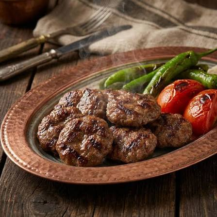

Cappadocië
Cappadocië staat bekend om zijn bijzondere rotsformaties en kleurrijke luchtballonnen.

| Onderwerp | Informatie |
|---|---|
| Hoofdstad | Ankara |
| Taal | Turks |
| Valuta | Turkse lira |
| Continent | Europa en Azië |
| Klimaat | Verschillend per regio |
| Reisduur | Ongeveer 3 uur |
Cappadocië staat bekend om zijn bijzondere rotsformaties en kleurrijke luchtballonnen.

Akçaabat köftesi bestaat uit gekruid rundergehakt met knoflook en brood. De gehaktballetjes worden op houtskool gegrild.